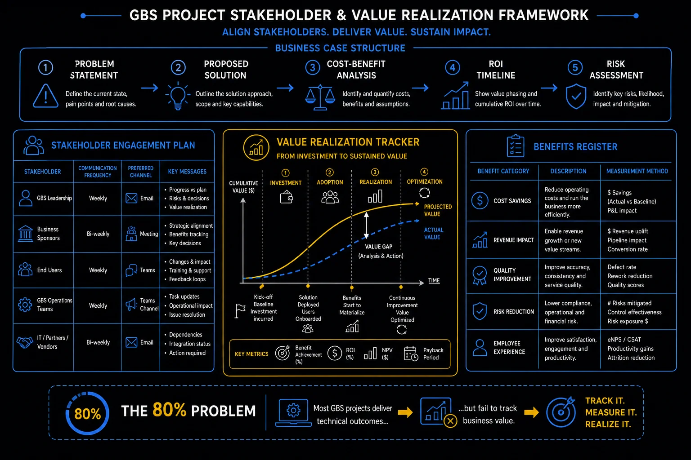

Pillar 8 · Cluster 3
Stakeholders and value realization
RACI matrices clarify who does what. Benefits realization tracks whether the project actually delivered value. Steering committees provide governance. Together, they determine project success.

GBS project stakeholder and value realization framework
Topic 01 · Role Clarity
RACI matrix — mapping roles and responsibilities
When everyone is responsible, nobody is responsible. RACI prevents ambiguity by defining exactly who does the work, who owns the outcome, who provides input, and who needs to be kept aware.
- Responsible (R) — the person or team who does the work. There can be multiple Rs for different sub-tasks.
- Accountable (A) — the single person who owns the outcome. Only one A per task. The buck stops here.
- Consulted (C) — people whose input is needed before the work is done. Two-way communication.
- Informed (I) — people who need to know the outcome but do not need to provide input. One-way communication.
The most common RACI failure is having too many Cs and no clear A. Every stakeholder wants to be consulted, which creates a consensus-driven paralysis. A well-governed RACI has exactly one A per deliverable, limits Cs to those whose input genuinely changes the quality of the decision, and uses I liberally to keep people informed without slowing down execution.
Business case — problem, solution, cost-benefit, ROI, risk
Topic 02 · Value Tracking
Benefits realization — tracking ROI post-project
The project business case promises benefits. Benefits realization tracks whether those benefits actually materialized after the project ended.
- Define benefits at project initiation — not after go-live, when it is too late to set baselines
- Baseline current state — measure the metrics you plan to improve before the project begins
- Assign benefit owners — someone accountable for each benefit realization, independent of the project team
- Track at 3, 6, and 12 months post-go-live — benefits rarely materialize at go-live; they emerge as adoption matures
- Report honestly — if benefits did not materialize, document why and adjust future business cases accordingly
Benefits register — cost savings, revenue, quality, risk, experience
Topic 03 · Governance
Managing executive sponsors and steering committees
Steering committees are where projects get approved, funded, and protected. Managing them well is the difference between a project with air cover and a project that gets defunded at the first obstacle.
- Pre-wire decisions — never surprise a steering committee; brief key members individually before the meeting
- Focus on decisions, not updates — status reports can be read; steering committee time should be used for decisions and escalations
- Present options, not problems — come with recommended actions and the trade-offs of alternatives
- Protect the sponsor — your executive sponsor's credibility is tied to the project; keep them informed of risks early so they are never blindsided
- Document decisions and distribute immediately — steering committee decisions carry organizational authority only when documented and communicated
Value realization — investment to optimization
- I have never seen a project fail because the business case was wrong. I have seen dozens fail because nobody tracked whether the promised benefits were actually delivered. Benefits realization tracking should start at the charter, not at go-live.
- Hard savings hit the P&L. Soft savings make a nice slide. Finance will only validate the hard ones. If your improvement project claims "productivity gains" without showing headcount reduction or volume absorption, expect pushback at sign-off.
Reference
Glossary
Full glossary at the GBS Insider Club Field Guide.
- PMI — Benefits Realization Management Practice Guide, 2019
- PRINCE2 — Project Board and steering committee governance
- McKinsey — The role of the executive sponsor in transformation, 2024
Knowing the frameworks is the entry ticket. Applying them — visibly, at your actual job — is what gets you promoted.
The GBS Insider Club Career Paths turn this theory into a guided 90-day program for your role: self-assessment, practical exercises, templates, and Julian's unfiltered practitioner playbook.
Explore the Career Paths → Back to Projects and Transformation